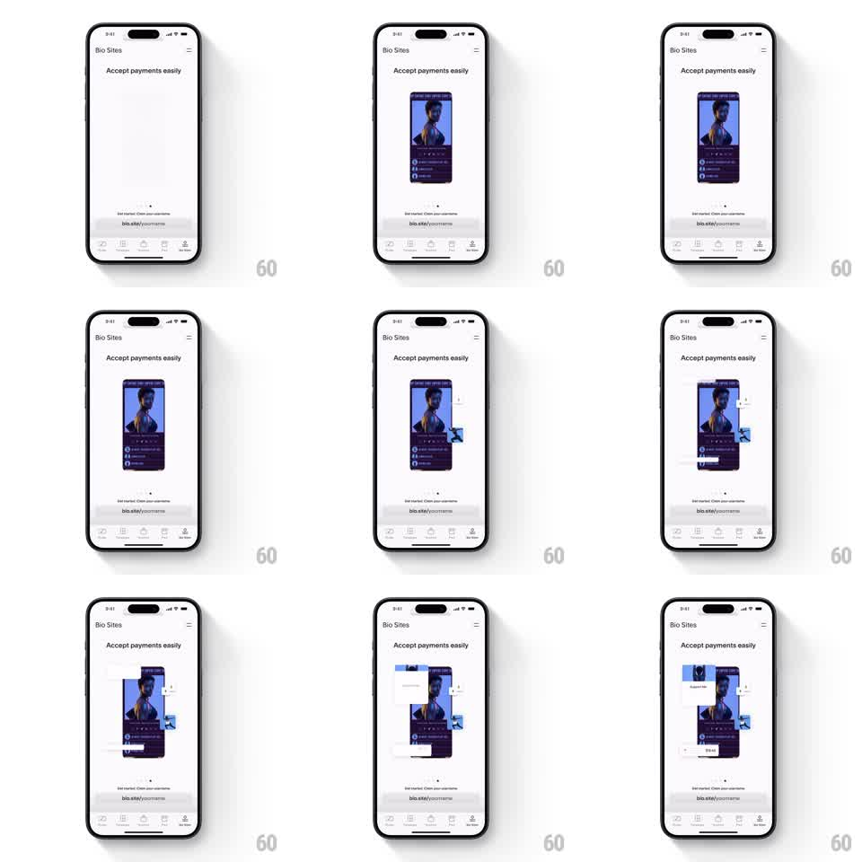

Media
Frame-by-frame

Rebuild this animation 1:1: Unfold's Bio Sites "Accept payments easily" intro - a phone mockup of a bio site profile fades in center-screen, then payment cards and badges slide and fade into place around it with a springy settle, over a static header, caption, and tab bar.

Rebuild this animation 1:1: Unfold's Bio Sites "Accept payments easily" intro - a phone mockup of a bio site profile fades in center-screen, then payment cards and badges slide and fade into place around it with a springy settle, over a static header, caption, and tab bar.
## Integration
Integration: stack-agnostic spec - springs given as stiffness/damping, timed motions as duration + curve; map every value to your framework and animation library of choice.
## Scene
Light content page: top bar ("Bio Sites" title, hamburger icon), centered headline "Accept payments easily", a phone-frame mockup of a bio site (profile photo, dark card, link list), caption "Get started. Claim your username" + "bio.site/yourname" link, bottom tab bar.
## Motion spec
Pattern: staged feature-showcase entrance, ~2.5s.
- Mockup fades in and scales 0.9 -> 1 over 500ms, ease-out.
- Payment cards (a "Support Us" card, a "$10.00" payment badge) slide in from alternating sides (translateX +-60px -> 0) with opacity 0 -> 1, staggered 120ms apart, spring ~260/20 so each overshoots slightly and settles.
- Cards land at scattered rotations (+-4deg) around the mockup edges, partially overlapping it.
- Header, caption, and tab bar never move.
## Calibration
- The mockup must be fully settled before the first card enters - overlap reads as clutter, not choreography.
- Card settle overshoot is small (~3px); this is polished product UI, not playful bounce.
## Reduced motion
All elements crossfade to final positions (300ms); no slides or springs.
## Don't miss
- Cards enter in a fixed order (top-right badge first, then left card, then bottom card) - randomizing the order breaks the designed eye path.
- The page chrome (header, tab bar) is static the whole time; only the mockup stage animates.